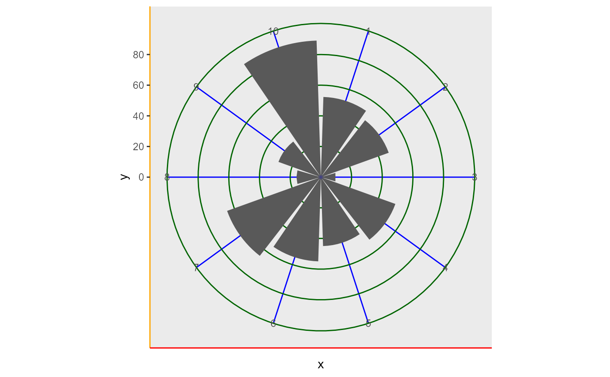
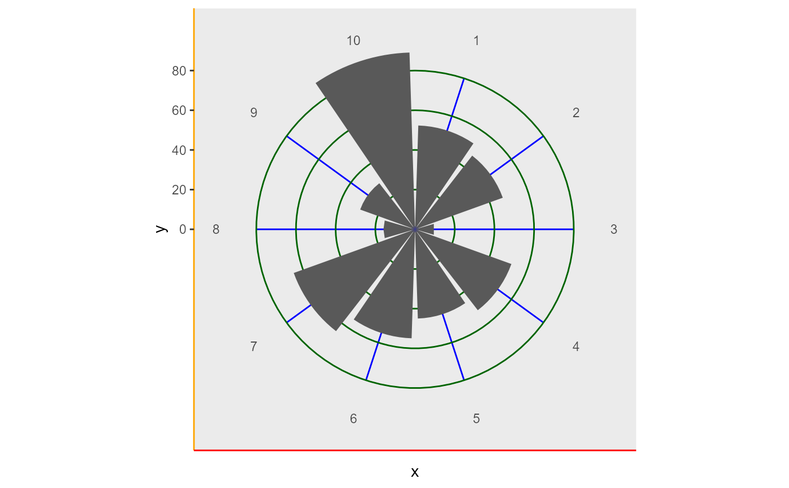
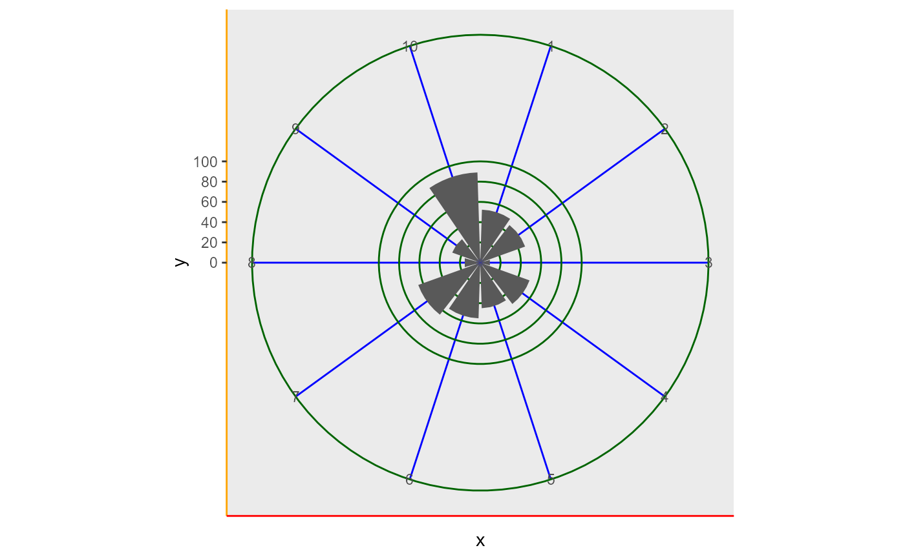
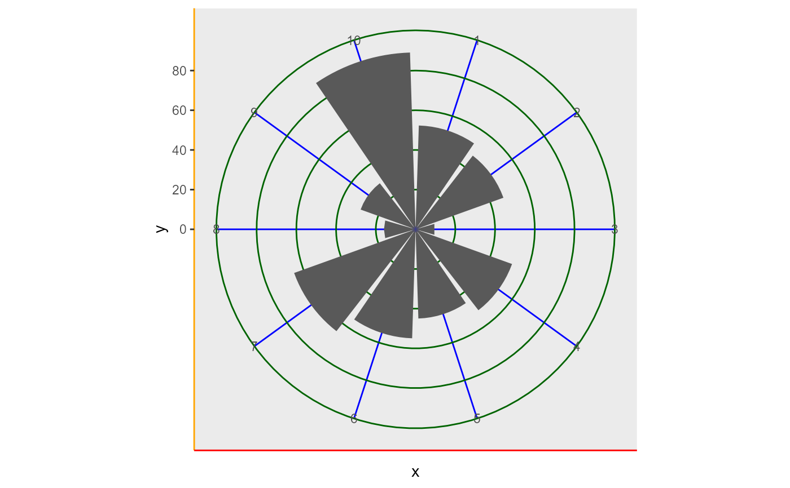
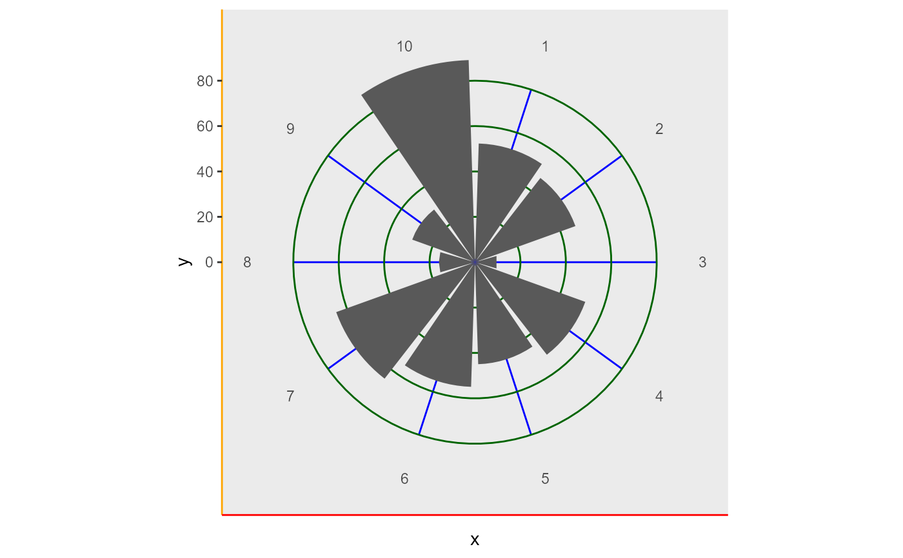
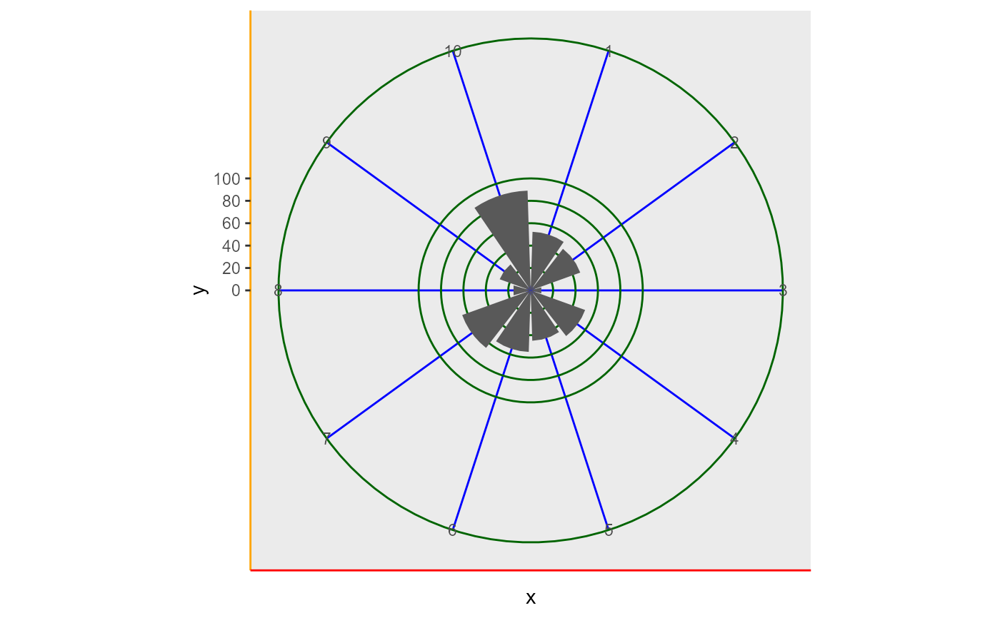

The differences between ggplot2::coord_polar() and coord_polar2() are:
Add a raster (image) as background. As example a map created with
get_stamen_map()ggplot2::coord_polar()always adds an outer circle with r = 0.45 to the plot. This circle is removed.
coord_polar2(theta = "x", start = 0, direction = 1, clip = "on", bg = NULL)Arguments
- theta
variable to map angle to (
xory)- start
Offset of starting point from 12 o'clock in radians. Offset is applied clockwise or anticlockwise depending on value of
direction.- direction
1, clockwise; -1, anticlockwise
- clip
Should drawing be clipped to the extent of the plot panel? A setting of
"on"(the default) means yes, and a setting of"off"means no. For details, please seecoord_cartesian().- bg
raster for background image
Value
ggplot2 coord system
See also
Examples
library(ggplot2)
fn <- rOstluft.data::f("Zch_Stampfenbachstrasse_2010-2014.csv")
data <- rOstluft::read_airmo_csv(fn) %>%
rOstluft::rolf_to_openair()
data_summarized <- summary_wind(data, ws, wd, ws,
ws_cutfun = cut_ws.fun(ws_max = 4, reverse = TRUE)
)
wind_rose <- ggplot(data_summarized, aes(x = wd, y = freq, fill = ws)) +
geom_bar(stat = "identity", alpha = 0.8) +
scale_y_continuous(
limits = c(0, NA),
expand = c(0,0, 0, 0),
labels = scales::percent
) +
scale_fill_viridis_d()
# background map
bbox <- bbox_lv95(2683141, 1249040, 500)
#> Warning: Discarded datum CH1903+ in Proj4 definition
bg <- get_stamen_map(bbox)
wind_rose + coord_polar2(start = - 45 * pi / 360, bg = bg)
 # removed outer circle
df <- tibble::tibble(x = factor(1:10), y = runif(10, 0, 100))
p <- ggplot(df, aes(x = x, y = y)) +
geom_bar( stat = "identity") +
scale_x_discrete() +
theme(
axis.line.x = element_line(colour = "red"),
axis.line.y = element_line(colour = "orange"),
panel.grid.major.x = element_line(colour = "blue"),
panel.grid.major.y = element_line(colour = "darkgreen"),
panel.grid.minor.y = element_line(colour = "darkolivegreen2")
)
# default behaviour with no breaks
p + coord_polar() + scale_y_continuous()

p + coord_polar2() + scale_y_continuous()

# behavoiur with manuel breaks and limit
p + coord_polar() + scale_y_continuous(breaks = seq(0, 100, 20), limits = c(0, 200))

p + coord_polar2() + scale_y_continuous(breaks = seq(0, 100, 20), limits = c(0, 200))
# removed outer circle
df <- tibble::tibble(x = factor(1:10), y = runif(10, 0, 100))
p <- ggplot(df, aes(x = x, y = y)) +
geom_bar( stat = "identity") +
scale_x_discrete() +
theme(
axis.line.x = element_line(colour = "red"),
axis.line.y = element_line(colour = "orange"),
panel.grid.major.x = element_line(colour = "blue"),
panel.grid.major.y = element_line(colour = "darkgreen"),
panel.grid.minor.y = element_line(colour = "darkolivegreen2")
)
# default behaviour with no breaks
p + coord_polar() + scale_y_continuous()

p + coord_polar2() + scale_y_continuous()

# behavoiur with manuel breaks and limit
p + coord_polar() + scale_y_continuous(breaks = seq(0, 100, 20), limits = c(0, 200))

p + coord_polar2() + scale_y_continuous(breaks = seq(0, 100, 20), limits = c(0, 200))